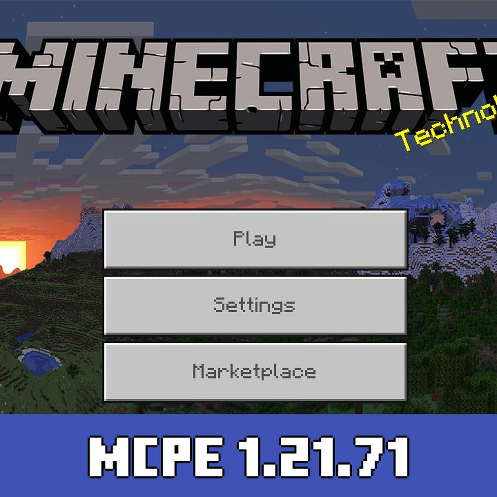

Minecraft 1.21.71.01 APK – A Complete Exploration
Minecraft remains one of the most influential games in the history of digital entertainment, offering a unique sandbox experience that continues to evolve with each new update. The release of Minecraft 1.21.71.01 APK brings fresh features, improvements, and a host of exciting changes that enhance the gameplay for both new and veteran players. This article explores everything you need to know about this version of the game, including its gameplay mechanics, new features, graphical upgrades, community involvement, and much more.
Introduction to Minecraft
Originally developed by Mojang Studios and released in 2011, Minecraft revolutionized gaming with its pixelated block-style graphics and limitless possibilities for creation, exploration, and survival. The game has since evolved with numerous updates, platform expansions, and community-driven content. It’s a space where players can build complex structures, explore vast worlds, fight off creatures, and even craft their own adventures.
The APK version of Minecraft caters specifically to Android users, providing a mobile-friendly platform that mirrors the core experience of the PC and console versions. Version 1.21.71.01 introduces several refinements and adds layers of depth to the already-rich Minecraft universe.
What’s New in Minecraft 1.21.71.01?
Minecraft 1.21.71.01 APK is not just a regular patch update. It is packed with meaningful changes that affect how players interact with the world, what they can create, and how they experience adventure.
1. New Mobs and Creatures
This version introduces new mobs that bring life and challenge to the gameplay. Players can now encounter the Breeze, a mob that uses wind-based attacks, adding a strategic element to battles. Another exciting addition is the Armadillo, a passive mob that adds diversity to the wildlife and can roll into a ball when threatened.
2. Trial Chambers
One of the most significant additions in this version is the new structure called Trial Chambers. These are procedurally generated dungeons filled with traps, puzzles, and enemies. They are designed to test the player's combat and survival skills, making exploration much more thrilling. Trial Chambers feature unique blocks, like copper bulbs and chiseled copper, that reward adventurers with new crafting opportunities.
3. New Blocks and Materials
Minecraft 1.21.71.01 introduces several new blocks, including Crafter Blocks which can be automated using redstone, and new decorative copper blocks. These blocks not only add aesthetic variety but also open new mechanical possibilities in redstone engineering.
4. Combat Enhancements
The combat system receives fine-tuning in this version. Weapon mechanics feel more balanced, and the game now includes new weapon variants. The addition of Wind Charges as a throwable item makes ranged combat more dynamic. Players can use Wind Charges to knock back mobs or solve environment-based puzzles.
5. Environmental and World Changes
Biomes have been subtly improved with enhanced generation algorithms, resulting in more diverse landscapes and seamless terrain transitions. These improvements are most noticeable in mountain and desert biomes, where new flora and unique terrain formations can be found.
Graphics and Performance
Minecraft’s distinct blocky art style is retained, but the developers continue to improve visual fidelity. In 1.21.71.01, lighting effects have been enhanced, making torches and glowstone more visually impactful in caves and structures. Water reflections and fog effects have also seen subtle upgrades.
For Android devices, the APK version is optimized to run smoothly on a wide range of hardware. Performance improvements in this update ensure faster chunk loading and less lag, especially in larger worlds with more entities and complex builds.
User Interface and Controls
The touchscreen controls in Minecraft 1.21.71.01 APK have been further refined. Button placement is now more ergonomic, and sensitivity customization has improved. This gives players more precision during combat and building.
Inventory management has also seen small but helpful tweaks, with better sorting and faster access to crafting recipes, which is especially valuable during survival gameplay when time is critical.
Multiplayer and Crossplay Experience
Minecraft’s multiplayer remains one of its strongest features. In version 1.21.71.01, the APK supports seamless online play through Realms and local Wi-Fi. Cross-platform play with friends on Windows, consoles, and iOS remains intact, allowing for a cohesive multiplayer experience.
The update includes better server browser navigation, making it easier for players to join mini-games or community-run adventure maps. Lag in multiplayer sessions has also been reduced, thanks to background optimizations and server-side tweaks.
Customization and Creative Mode
Customization continues to be a key pillar of Minecraft’s appeal. This version brings more skins, character models, and emotes. Players using the APK can import their own skins or buy themed skin packs from the marketplace.
In Creative Mode, the expanded inventory now includes newly added blocks, mobs, and interactive items. Builders will appreciate the improved block placement system, allowing for smoother and more precise structure designs.
Redstone Innovations
Redstone engineers will love the additions in this update. The Crafter Block mentioned earlier is a game-changer—it allows redstone contraptions to craft items automatically when powered, opening doors for complex automation builds and survival-friendly factories.
Other tweaks like adjusted piston speeds and better observer responsiveness allow for more reliable contraptions, helping players bring their creative machinery ideas to life with fewer bugs and frustrations.
Community and Marketplace
The Minecraft Marketplace continues to thrive with content from independent creators. In this version, players can access new world templates, mini-games, and texture packs specifically optimized for 1.21.71.01. Whether you're looking to play an adventure map or transform the look of your game with a new resource pack, the options are ever-growing.
The Minecraft community is also heavily engaged in feedback loops with Mojang. This version is the result of months of beta testing and player feedback, which demonstrates the developers’ commitment to listening to players and implementing meaningful improvements.
Educational and Creative Uses
Minecraft is not just for entertainment—it’s widely used in education and creativity. With each update, its potential as a learning tool grows. Teachers use Minecraft Education Edition to teach coding, architecture, history, and even mathematics. Although the APK is not the Education Edition, its core features allow learners to experiment with logic, design, and storytelling.
In version 1.21.71.01, the new mobs and Trial Chambers can be used by educators and players alike to create role-playing experiences or problem-solving missions. Redstone mechanics offer a simple way to teach electrical concepts or programming logic.
Accessibility Improvements
Mojang continues to make Minecraft more accessible to a broader audience. In 1.21.71.01, enhancements have been made to subtitles, contrast options, and screen reader compatibility. These updates ensure that players with visual or auditory impairments can enjoy the game more comfortably.
Colorblind modes and interface scaling options also make gameplay more inclusive, while improved controller mapping allows for better use of external input devices on Android.
Security and Stability
Security patches in this version address exploits and bugs that could be abused in multiplayer or modded environments. Mojang has made efforts to ensure that APK users have the same level of stability as players on other platforms.
Crash bugs related to item duplication, corrupted chunks, and redstone overloads have been resolved. This makes 1.21.71.01 one of the most stable releases for mobile users to date.
Modding and Add-ons Support
Minecraft's flexibility through add-ons and mods is a major attraction. While the APK version doesn’t support full-scale Java mods, it still allows the use of behavior packs, resource packs, and script-based modifications.
In this version, compatibility with community-created content has been expanded. More detailed error logs and better scripting APIs allow creators to build more immersive content for players to enjoy.
Conclusion
Minecraft 1.21.71.01 APK is more than just a minor update—it’s a substantial step forward in terms of gameplay innovation, performance, and creative possibilities. From Trial Chambers and new mobs to redstone automation and world-generation improvements, this version breathes new life into the mobile Minecraft experience.
Whether you’re a long-time fan or a newcomer just stepping into the blocky world, Minecraft 1.21.71.01 offers something for everyone. It continues to prove why Minecraft remains at the forefront of gaming culture—a game that is as much about imagination and expression as it is about survival and adventure.